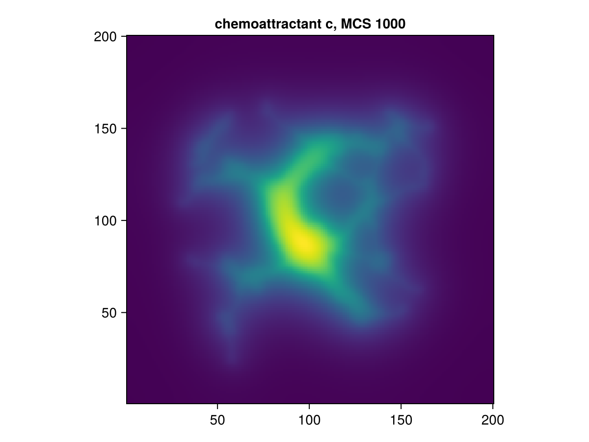
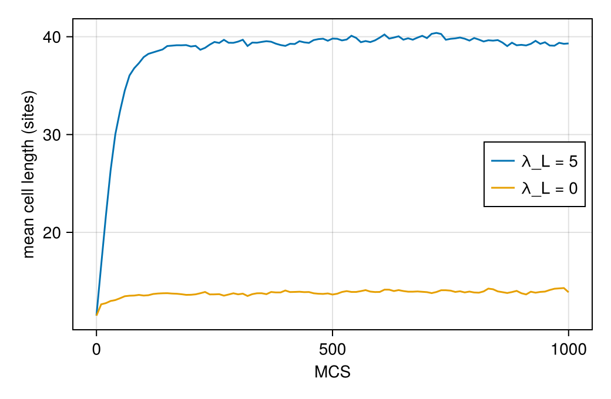

Vasculogenesis by chemotaxis and cell elongation
Endothelial cells spread on Matrigel organise themselves into a polygonal network of cords, the first step of blood-vessel formation (vasculogenesis). The cells secrete a chemoattractant and move up its gradient. Merks and coworkers (2006) found that in a cellular Potts model this chemotaxis alone gathers the cells into round islands, and that a network forms only when the cells are elongated. This page builds their model.
What you will learn
- how to declare a diffusing field and write its reaction–diffusion equation;
- how a drive adds a non-energetic bias (chemotaxis) to every copy;
- how a shape descriptor (the cell length) enters an energy term;
- how a constraint keeps cells in one piece, and how a structural parameter switches between model variants;
- how to choose the field solver, compare runs with a parameter changed, and record them as movies, on the paper's lattice.
The cell sorting page explains the parts every model shares (lattice, kinds, parameters, the area and contact energies, the sweep); here they are brief.
The paper
- R. M. H. Merks, S. V. Brodsky, M. S. Goligorsky, S. A. Newman and J. A. Glazier, "Cell elongation is key to in silico replication of in vitro vasculogenesis and subsequent remodeling", Dev. Biol. 289, 44 (2006), doi:10.1016/j.ydbio.2005.10.003.
- R. M. H. Merks, E. D. Perryn, A. Shirinifard and J. A. Glazier, "Contact-inhibited chemotaxis in de novo and sprouting blood-vessel growth", PLoS Comput. Biol. 4, e1000163 (2008), doi:10.1371/journal.pcbi.1000163.
Equation numbers below are those of the 2006 paper. The energy is Eq. (1) plus the length constraint of Eq. (4):
\[H = \sum_{\langle i,j \rangle} J\big(\tau(\sigma_i), \tau(\sigma_j)\big)\,(1 - \delta_{\sigma_i \sigma_j}) + \lambda \sum_\sigma (a_\sigma - A)^2 + \lambda_L \sum_\sigma (l_\sigma - L)^2 .\]
A copy from site $x$ into its neighbour $x'$ changes the energy by an extra chemotaxis term, Eq. (2), $\Delta H_{\text{chemotaxis}} = \chi\,(c(x) - c(x'))$ ($\gamma$ in the paper): copies up the gradient are favoured. The chemoattractant $c$ obeys Eq. (6),
\[\frac{\partial c}{\partial t} = D \nabla^2 c + \alpha\,[\text{cell}] - \varepsilon\,c\,[\text{matrix}] ,\]
secreted at rate $\alpha$ inside cells and decaying at rate $\varepsilon$ in the matrix.
The paper run
The finished model, built step by step below, run at the paper's size, with the paper's starting state, parameters and run length. It is computed outside the docs build:
Paper run — Merks et al. (2006) vasculogenesis, the paper's 2006 parameter set: 282 cells on 500×500, 6000 MCS = 50 h (paper: Fig. 4 to 48 h, Fig. 5 to 50 h), seed 1. Remaining differences: a hard connectivity veto instead of the E₀ penalty; free closed walls instead of a frozen border with J_cB = 100; a zero-flux field boundary instead of an absorbing c = 0 ring; 10×10 initial cells (unstated in the paper).
The rest of this page builds the model and runs it at a size that takes seconds.
using Potts, PottsModelsStep 1: the lattice and the variant switch
@structural_parameters begin
lattice = (500, 500)
contact_inhibited = false
end
@lattice Lattice(lattice; boundary = Closed(), neighborhood = Moore(1))
@relations proposal = Moore(1)The lattice is closed (no wrap-around), with Moore contacts (the paper's 8 neighbours) and copies (from the authors' code). The paper's border differs; see the table at the end. contact_inhibited is a second structural parameter: it selects one of two chemotaxis rules in Step 6, when the model is constructed.
Step 2: cell kinds
@kinds medium endothelialOne cell kind, the endothelial cells, in a medium that stands for the matrix.
Step 3: parameters
@parameters begin
λ = 50.0
V₀ = 100.0
λ_L = 5.0
L = 50.0
χ = 1000.0
Dc = 0.75
σc = 5.4e-3
δc = 5.4e-3
T = 50.0
J[kind, kind] = [0.0 20.0; 20.0 40.0]
endThe defaults are the paper's values in lattice units (2 µm per site, 30 s per MCS): $T = 50$, $\chi = 1000$, cell–cell $J = 40$, cell–matrix $J = 20$, $D = 0.75$, $\alpha = \varepsilon = 5.4 \cdot 10^{-3}$, target area V₀ $= 100$ with λ $= 50$, and target length L $= 50$ (the paper's "about 100 µm") with λ_L $= 5$. Dc, σc and δc are $D$, $\alpha$ and $\varepsilon$. The 2008 contact-inhibited runs used smaller cells (target area 50); pass such values as keywords.
Step 4: the chemoattractant field
@variables c(field) = 0.0A variable's scope is written in its signature. c(field) is a value at every lattice site that is advanced by a differential equation (Step 7); it starts at 0. Other scopes are x(site) (a value per site updated by rules), x(cell) (one value per cell) and x(model) (one value for the whole model).
Step 5: the energy
cells(endothelial) => λ * (volume - V₀)^2 + λ_L * (major_length - L)^2The area term is the one of cell sorting. The length term uses the built-in shape descriptor major_length: the paper's cell length $l = 4\sqrt{\lambda_b / a}$, with $\lambda_b$ the largest eigenvalue of the cell's inertia tensor (Eq. (5)). The compiler keeps the cell's moments up to date, so the term costs a few operations per copy.
contacts => J[kind, kind′]Step 6: the chemotaxis drive
if contact_inhibited
@drive copy => ifelse((old == 0) && (kind[new] == endothelial), -χ * (c[target] - c[source]), 0.0)
else
@drive copy => -χ * (c[target] - c[source])
endA drive adds a term to $\Delta H$ of every copy without being part of $H$. Chemotaxis is one: it biases copies but stores no energy. In a copy, source is the site copied from and target the site copied into, so -χ * (c[target] - c[source]) is Eq. (2): negative, hence favoured, when the cell extends up the gradient.
The if is evaluated when the model is constructed. With contact_inhibited = true the drive acts only when a cell extends into the medium (old == 0: the target belonged to the medium; new is the cell that gains it). That is the contact-inhibited, extension-only rule of the 2008 paper (its Eq. (4), here without the saturation of the response), with which cells form sprouts.
Step 7: the field equation
@equations D(c) ~ Dc * Δ(c) + σc * (kind == endothelial) - δc * c * (kind == medium)@equations takes ModelingToolkit-style equations. D(c) is the time derivative, Δ(c) the lattice Laplacian, and (kind == endothelial) is 1 at sites owned by an endothelial cell and 0 elsewhere: this is Eq. (6) term by term. The equation is solved after every MCS. How is chosen when the problem is built (below), not in the model.
Step 8: connectivity
@constraint connectivity(endothelial; rule = :local)A constraint vetoes copies. The paper penalises copies that would split a cell (an energy threshold above 2000, p. 49); here such copies are forbidden outright. The :local rule decides from the 8 neighbours of the target site whether the losing cell stays in one piece.
Step 9: the sweep
@sweep Metropolis(; temperature = T)
endMetropolis at $T = 50$. The paper adds a dissipation threshold $E_0$ to the acceptance rule (Eq. (3)) but gives no value; the model uses plain Metropolis.
The whole model
@potts_model Vasculogenesis begin
@structural_parameters begin
lattice = (500, 500)
contact_inhibited = false
end
@lattice Lattice(lattice; boundary = Closed(), neighborhood = Moore(1))
@relations proposal = Moore(1)
@kinds medium endothelial
@parameters begin
λ = 50.0
V₀ = 100.0
λ_L = 5.0
L = 50.0
χ = 1000.0
Dc = 0.75
σc = 5.4e-3
δc = 5.4e-3
T = 50.0
J[kind, kind] = [0.0 20.0; 20.0 40.0]
end
@variables c(field) = 0.0
@energy begin
cells(endothelial) => λ * (volume - V₀)^2 + λ_L * (major_length - L)^2
contacts => J[kind, kind′]
end
if contact_inhibited
@drive copy => ifelse((old == 0) && (kind[new] == endothelial), -χ * (c[target] - c[source]), 0.0)
else
@drive copy => -χ * (c[target] - c[source])
end
@equations D(c) ~ Dc * Δ(c) + σc * (kind == endothelial) - δc * c * (kind == medium)
@constraint connectivity(endothelial; rule = :local)
@sweep Metropolis(; temperature = T)
endEvery default is the paper's value. The paper run at the top of this page uses the paper's 500 × 500 lattice; here we use 200 × 200 at the same cell density, so that the page builds in seconds:
@named vasc = Vasculogenesis(; lattice = (200, 200))PottsSystem vasc on 200×200 (2D)
kinds: medium, endothelial
parameters: λ, V₀, λ_L, L, χ, Dc, σc, δc, T, J
variables: c(field)
energy cells(1) => ((-L + major_length)^2)*λ_L + ((-V₀ + volume)^2)*λ
energy contacts => Potts.at2(J, kind, kind′)
drive copy => -(-Potts.at(c(t), source) + Potts.at(c(t), target))*χ
constraint connectivity[1]
equation Differential(t, 1)(c(t)) ~ (kind == 1)*σc + Dc*Potts.Δ(c(t)) - (kind == 0)*c(t)*δc
sweep: metropolis(temperature = T)The starting state
The paper scatters 282 cells at random over the central 333 × 333 sites of its lattice (Fig. 4). merks_state builds this start: square cells of 10 × 10 sites (the target area; the paper does not state the initial cell shape) at random, non-overlapping positions with gaps of at least one site. Scaled to our lattice, 45 cells over the central 133 × 133 sites keep the paper's density:
u0 = merks_state(; lattice = (200, 200), region = (133, 133), n = 45)
length(u0[2].second)45The same kind of start is one Scattered layer of the layout vocabulary, for example layout(Scattered(45, (10, 10); kinds = [:endothelial], region = (34:166, 34:166), seed = 1), vasc).
Solving
A model with a field needs a field solver, chosen when the problem is built. The paper integrates the field with 15 explicit Euler steps per MCS (2 s each); substeps = 15 does the same, and lower = 0.0 clips the concentration at zero. One MCS is 30 s, so 1000 MCS are about 8 hours (paper: 50 hours; here: 1000 MCS, to keep the build short):
prob = PottsProblem(vasc, u0, (0, 1000); seed = 1, field_solver = ExplicitEuler(substeps = 15, lower = 0.0))
sol = solve(prob, SequentialCPM(); saveat = 0:10:1000)PottsSolution: retcode Success, 101 saved states, 1000 MCS
t: [0, 10, 20, 30, 40, …, 960, 970, 980, 990, 1000]The paper's central claim is that elongation makes the network. remake builds the same problem with a parameter changed, without compiling again; with λ_L = 0 the cells stay round:
round_cells = solve(remake(prob; p = [:λ_L => 0.0]), SequentialCPM(); saveat = 0:10:1000)PottsSolution: retcode Success, 101 saved states, 1000 MCS
t: [0, 10, 20, 30, 40, …, 960, 970, 980, 990, 1000]The runs as movies
record_potts writes a solution as a movie; endothelial cells are blue, the matrix black, and boundaries = true outlines each cell.
using MakiePotts, CairoMakie
record_potts("merks/elongated.mp4", sol; framerate = 15, title = "elongated cells (λ_L = 5)",
figure = (; size = (400, 400)), plot = (; boundaries = true))
record_potts("merks/round.mp4", round_cells; framerate = 15, title = "round cells (λ_L = 0)",
figure = (; size = (400, 400)), plot = (; boundaries = true))Elongated cells join into branched cords, the start of a network; round cells gather into compact islands (the paper's Fig. 6 makes this comparison). With only 45 cells the small network coarsens if run much longer; the paper run at the top shows the full-size network over 50 hours. sol[:c] reads the chemoattractant at every saved time (symbolic indexing, as in ModelingToolkit); at the end it follows the network:
CairoMakie.activate!(type = "png")
heatmap(sol[:c][end]; axis = (title = "chemoattractant c, MCS $(sol.t[end])", aspect = DataAspect()))
Measuring elongation
sol[:major_length] is the length of every cell at every saved time. The cells start as 10 × 10 squares (length about 11.5) and stretch towards L = 50 when λ_L > 0:
using Statistics: mean
mean_length(s) = [mean(l) for l in s[:major_length]]
fig = Figure(size = (520, 340))
ax = Axis(fig[1, 1]; xlabel = "MCS", ylabel = "mean cell length (sites)")
lines!(ax, sol.t, mean_length(sol); label = "λ_L = 5")
lines!(ax, round_cells.t, mean_length(round_cells); label = "λ_L = 0")
axislegend(ax; position = :rc)
fig
Differences from the paper
| Paper (2006) | Here | |
|---|---|---|
| Lattice | 500 × 500, 282 cells over the central 333 × 333 sites | 200 × 200 on this page, 45 cells over the central 133 × 133 sites (same density; the paper run above uses the paper's) |
| Run length | 50 h (6000 MCS) | 1000 MCS (8.3 h) on this page, to keep the docs build short |
| Cell size | $A = 100$, $\lambda = 50$, length "about 100 µm" ($L = 50$), $\lambda_L = 5$; the authors' parameter file longcells.par uses $L = 60$ | the same, with L = 50 from the paper text (pass L = 60.0 for the parameter file's value) |
| Initial cells | shape not stated | 10 × 10 squares |
| Lattice border | frozen border cells with $J = 100$ against cells | closed walls that cost nothing |
| Field at the border | the authors' code holds $c = 0$ on an absorbing border ring | zero flux |
| Contact-inhibited variant (2008) | 20 neighbours for contacts and copies (the authors' parameter files) | contact_inhibited = true keeps the 8 Moore neighbours |
| Acceptance | Metropolis with a dissipation threshold $E_0$ (Eq. (3)), value not given | plain Metropolis |
| Connectivity | an energy penalty above 2000 (p. 49) | a hard veto |
| Field integration | 15 explicit substeps per MCS (p. 49) | the same, ExplicitEuler(substeps = 15), clipped at 0 |
The cell size, contact energies, temperature, chemotaxis strength, the field integration, the diffusion, secretion and decay rates inside the lattice, the 2006 model's neighbourhoods and the cell density are the paper's.
This model ships as MerksVasculogenesis
PottsModels exports this model as MerksVasculogenesis; the test suite checks that it compiles to the same code and defaults as Vasculogenesis above, in both variants.
@named merks = MerksVasculogenesis()PottsSystem merks on 500×500 (2D)
kinds: medium, endothelial
parameters: λ, V₀, λ_L, L, χ, Dc, σc, δc, T, J
variables: c(field)
energy cells(1) => ((-L + major_length)^2)*λ_L + ((-V₀ + volume)^2)*λ
energy contacts => Potts.at2(J, kind, kind′)
drive copy => -(-Potts.at(c(t), source) + Potts.at(c(t), target))*χ
constraint connectivity[1]
equation Differential(t, 1)(c(t)) ~ (kind == 1)*σc + Dc*Potts.Δ(c(t)) - (kind == 0)*c(t)*δc
sweep: metropolis(temperature = T)Its start is merks_state(): the paper's 282 cells on the 500 × 500 lattice.
PottsModels.MerksVasculogenesis — Function
MerksVasculogenesis(; name, lattice = (500, 500), contact_inhibited = false, …)Vasculogenesis by chemotaxis to an autocrine chemoattractant, with elongated cells (Merks, Brodsky, Goligorsky, Newman & Glazier, Dev. Biol. 289, 44, 2006):
H = Σ J + λ Σ (a − A)² + λ_L Σ (l − L)²(Eqs. 1, 4), with the cell lengthl = 4√(λ_max(I)/a)(Eq. 5, themajor_lengthbuilt-in). Elongation is what turns the round islands of pure chemotaxis into networks.- Chemotaxis
ΔH = −χ (c(target) − c(source))on every copy (Eq. 2, Savill–Hogeweg form). Withcontact_inhibited = trueit acts only on extensions of a cell into the medium (the contact-inhibited model of Merks et al., PLoS Comput. Biol. 4, e1000163, 2008). ∂c/∂t = D∇²c + α δ_cell − ε c (1 − δ_cell)(Eq. 6): cells secrete, the chemoattractant decays only in the matrix. The field is advanced by explicit Euler, clipped at zero.- Cells stay connected: a copy may not split a cell (a hard veto for the paper's connectivity penalty; the CompuCell3D one-arc rule).
Defaults are the 2006 parameter set in lattice units (2 µm/px, 30 s/MCS): T = 50, χ = 1000, J_cc = 40, J_cM = 20, D = 0.75 (10⁻¹³ m²/s), α = ε = 5.4·10⁻³ (1.8·10⁻⁴ s⁻¹), target area A = 100 with λ = 50, and target length L = 50 ("about 100 µm" in the paper text) with λ_L = 5, on a 500² lattice with Moore contacts and copies. Seed with merks_state: 282 cells of 10² sites over 333². The 2008 contact-inhibited runs used other values (A = 50 and Dataset S1); pass them as keywords with contact_inhibited = true.
Differences from the paper:
- connectivity is a hard veto, not the soft penalty
E₀ > 2000on connectivity-breaking copies; - the closed walls cost nothing; the paper has frozen border cells with
J_cB = 100; - the field boundary is zero-flux; the paper's code holds
c = 0on the outer ring (absorbing); L = 50follows the paper text; the released parameter files labelled for Fig. 4 (longcells.par) useL = 60; passL = 60.0for that reading.
The field solver is a problem keyword with no default; this model's is the paper's schedule of 15 explicit Euler substeps per MCS (Δt = 2 s), field_solver = ExplicitEuler(substeps = 15, lower = 0.0):
prob = PottsProblem(MerksVasculogenesis(; name = :merks), merks_state(), (0, 10_000);
field_solver = ExplicitEuler(substeps = 15, lower = 0.0))PottsModels.merks_state — Function
merks_state(; lattice = (500, 500), region = lattice == (500, 500) ? (333, 333) : lattice,
n = 282, side = 10, seed = 1)n square endothelial cells of side² sites (the default 10² is the target area A = 100) at random, non-overlapping positions (one-site gaps) in a centred region (Merks et al. 2006: 282 cells over 333 × 333 sites of a 500² lattice): [ownership => σ, kind => fill(:endothelial, n)].